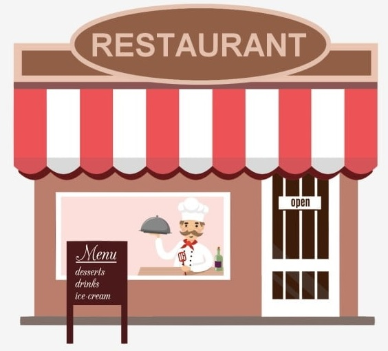

<ion-header>
  <ion-toolbar>
    <ion-button slot="start" fill="none" (click)="goMapa()">
      <ion-icon name="arrow-back"></ion-icon>
    </ion-button>

    <ion-title style="text-align: center;">Restaurantes afiliados</ion-title>
  </ion-toolbar>
</ion-header>


<ion-content [fullscreen]="true">
  <!-- <ng-template [ngIf]="validarDatos(existeDatos) === true">

    <div class="aver" style="margin-right: 25px;" style="display: grid; grid-template-columns: 1fr 1fr;">
      <div *ngFor="let a of afiliados$ | async">
        <div  *ngFor="let r of restaurante$ | async">
          <div style="margin-right: 25px;">
           
              <ion-card (click)="openRes(r)"  *ngIf="usuarioLog === a.uidUsu && r.userUID === a.uidResta && a.estado === 'verdadero'">
                <div class="titulo">
                  <h2 style="text-align: center;">{{r.nombreRestaurante}}</h2>
                </div>
                
              </ion-card> 
          </div>
        </div>
      </div>
    </div>
  </ng-template>  -->
  <ng-template [ngIf]="validarDatos(existeDatos) === true">

  <!-- <div class="aver" style="margin-right: 28px;" style="display: grid; grid-template-columns: 1fr 1fr;">
        <div  *ngFor="let r of listRestaurantes">
              <ion-card (click)="openRes(r)" >
                <div class="titulo">
                  <h2 style="text-align: center;">{{r.nombreRestaurante}}</h2>
                </div>
                
              </ion-card> 
        </div>
    </div> -->

  <div  style="display: grid; grid-template-columns: 1fr 1fr; padding-bottom: 20%;">
    <ion-card *ngFor="let r of listRestaurantes" (click)="openRes(r)">
      <ion-card-header>
        <h4 style="text-align: center;">{{r.nombreRestaurante}}</h4>
      </ion-card-header>
      
    </ion-card>
  </div>
  </ng-template>

  <ng-template #foto>
    
  </ng-template>

  <ng-template [ngIf]="validarDatos(existeDatos) === false" >

    <ion-card class="sinDatos">
      <ion-item>
        <!-- <ion-icon name="restaurant" slot="start"></ion-icon>
        <ion-icon name="restaurant" slot="end"></ion-icon> -->
        <ion-label></ion-label>
        
      </ion-item>
    
      <ion-card-content style="text-align: center;">
        No cuentas con restaurantes afiliados.
      </ion-card-content>
      <ion-item>
        <ion-label></ion-label>
      </ion-item>
    </ion-card>
  </ng-template>

</ion-content>